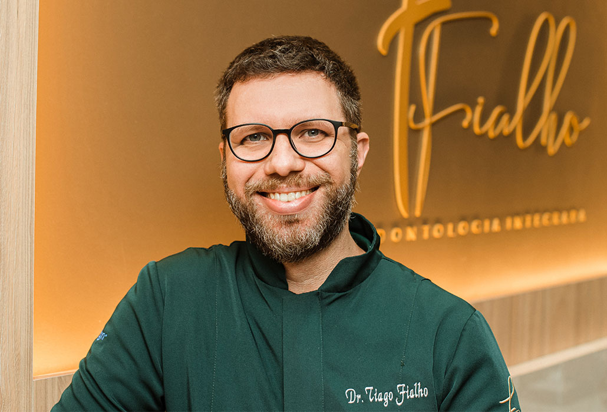

Conhecimento
que abre novos
caminhos.
Uma nova frente de atuação, construída a partir da experiência clínica e da trajetória acadêmica.
Converse sobre mentoria ↗
Uma trajetória.
Novas perspectivas.
A prática levanta perguntas. O estudo amplia as possibilidades.
Após concluir o doutorado na USP, em Bauru, o Dr. Tiago passou a dedicar uma parte significativa de sua atuação à área acadêmica, incluindo mentoria e consultoria.
Para conhecer essa frente de trabalho, apresente seu momento, suas dúvidas e seus objetivos em uma conversa inicial. O escopo da orientação será definido de acordo com a proposta de atendimento.
Do estudo à troca.
Mentoria acadêmica
Uma conversa sobre seu momento e seus objetivos acadêmicos.
Consultoria
Entre em contato para discutir sua necessidade e o escopo da proposta.
Como conhecer a proposta?
Escolha mentoria e consultoria na seção de contato. Descreva sua necessidade para conversar sobre formato, disponibilidade e condições.
A mentoria é um curso?
Os detalhes do serviço serão apresentados na conversa inicial. Esta página não anuncia um curso, certificação ou programa fechado.